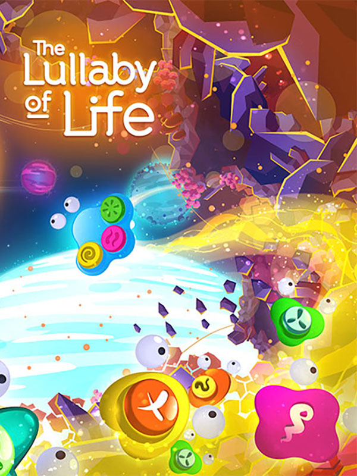

The Lullaby of Life
Detalhes
|  | |
| Tempo de jogo | Não Jogado |
| Última Atividade | Nunca |
| Adicionado | 11/02/2025 13:17:39 |
| Modificado | 11/02/2025 13:28:57 |
| Status de Conclusão | Not Played |
| Biblioteca | Gog |
| Fonte | GOG |
| Plataforma | PC (Windows) |
| Data de Lançamento | 24/07/2020 |
| Pontuação da Comunidade | |
| Avaliação da crítica | |
| Pontuação do Usuário | |
| Gênero | Adventure Music Puzzle |
| Desenvolvedor | 1 Simple Game |
| Editor | Midwest Games |
| Funções | Single Player |
| Links | Official Twitch Steam YouTube Epic GOG |
| Tag | |
Descrição
Born in the origins of the universe, you are a particle with the power to play musical notes in the form of waves. Experience this fascinating music-driven adventure that transforms sound into puzzles using timing, focus, dexterity, and agility.

SOLVE MUSIC DRIVEN PUZZLES
The Lullaby of Life is a puzzle adventure where you encounter puzzles solved through timing-based music notes. Solve these challenges using sound waves matched in sequences of different colors and symbols. Challenge the way you think with each level featuring unique puzzles, mechanics and ambience. Awaken new companions, bring life to inert beings, and solve your way in this abstract universe!EXPLORE THE ORIGINS OF THE UNIVERSE
You are the catalyst of new life everywhere in this curious universe. Explore, avoid obstacles, uncover secrets, escape enemies and dangers, and behold this journey where each level brings its own unique setting, characters, and aesthetics.BRING LIFE TO DORMANT BEINGS
While venturing into this universe you will encounter different beings. The main quest of each level is to awaken your Dormant Elders. Bring them to life through sequences of sound waves produced by you and your found companions picked up along the way.IMMERSE YOURSELF IN A HYPNOTIC WORLD
The Lullaby of Life presents a vivid and melodious universe like no other. Let the tranquility of the colors, animation and sound waves calm your body while your mind focuses on solving puzzles of increasing difficulties. An immersive game that leaves you feeling peaceful and attuned!FEATURES
- Challenging puzzles solved through sound, timing and mental agility
- Unique levels with distinct colors, atmosphere, and challenges ahead
- A hypnotic soundtrack that provides focus and tranquility
- Visual narrative accessible to all ages, languages and abilities
- Game mechanics that are mentally stimulating while in a calm environment are perfect for kids’ screen time or to destress at the end of the work day!
- Similar to games like Osmos, Flower, Webbed, Botanicula, and Journey